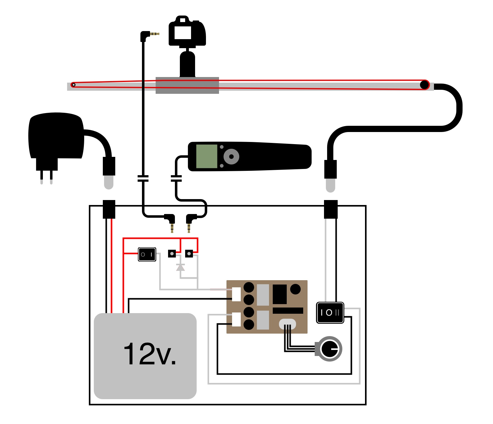

Slider Controller
The slider controller is a simple solution for powering and controlling the slider. It offers basic functions such as changing the speed and direction for shooting video and some more advanced for timelapse. For this mode, and with the help of a intervalometer, the controller allows for a more stabilised timelapse, because it won’t move while taking the photo. This also allows to take much longer timelapses.
What you need:
Intervalometer with 2.5mm Jack connector
The Intervalometer is the "brain" of the controller. It's where we are going to set the delay, longitud and interval of our shots.
12v. Rechargable Battery (normally used for CCTV) /w Switch and Charger
The battery is going to power our slider, so the grater the Amperage is, the longer it's going to last with a single charge. I bought one with 1800mAh and it works perfectly.
12v Motor Speed Control PWM /w Potentiometer
This is going to change the output voltage to control the speed of the motor. It consist of an analog potentiometer and a PMW board.
2X 2.5mm Jack Female
These we are going to use to connect the camera and the intervalometer to the controller.
2X 2.5mm Jack Male
These are used to connect the camera to the controller. I have a Canon 600d, so i used this kind of Jack. Check your camera to know which connector you have to use. If it's not this one, just buy one of the one you need and one 2.5mm jack.
6Pin DPDT Switch
This is going to allow us to change the current direction, changing the direction of the slider.

2X 5.5x2.1mm Female Connector
These ones we will connect the motor and the charger to the controller.
5.5x 2.1mm Female To Male Plug 3m.
This is the cable that will connect the controller to the motor.
2m. 2 wire Cable
The 2.5mm Jack is going to be soldered to the cable.
Diode
This is neccesary for everything to work.
What can it do?
As mentioned above, with the controller you will be able change the direction and speed of the motor. If you add an Intervalometer,as well as that you will be able to control the interval time (how much it waits between each shot) and the longitude (how much time it will move between each shot).
In addition, you can set an initial delay (when you want it to start at a specific point in time).
How it works
First, let's see how everything is wired:
The basic functions: Speed control
Now that we have an overview on how everything is wired, let's see how the basic functions of the controller work. The speed is changed through the PWM Speed controller circuit. This circuit has three parts, input (where the 12v first go in), the potentiometer (where it detects the speed you want) and the output.
(Clic on the video to pause/play it)
The basic functions: Direction control
The direction is changed through the 6Pin DPDT switch. It has four switches and three positions, I, 0 and II. When it's either on I or II, two switches are active, and when it's on 0 none are.
The video below shows side by side the swich from above (left) and the internal circuits being changed (right)
(Clic on the video to pause/play it)
The basic functions: Speed and Direction
Now we can put everything together. We can see three things happening in the video below, first, the controller is turned on with the On/Off Switch, then, the speed is changed with the speed Control circuit explained above and finally, the direction is changed using the 6Pin DPDT switch, also explained above.
(Clic on the video to pause/play it)
The advanced functions
Now that we know the basics of the controller, let's get in the advanced function for timelapse.
First let's clarify what an Intervaolmeter or Timer is. It's an external device that is normally used to take timelapses with an DSLR camera. When plugged in and activated, this device will wait some time before taking the first picture (DELAY), it will take a picture leaving the shutter pressed for a given time (LONGITUDE) and wait before taking the next picture (INTERVAL). You can also set how many images you want it to take (N).
There are many different connectors for different camera models. In my case, i have a Canon 600d, so i used one with a 2.5mm Jack connector.
In the case below, the intrvalometer is disected so that we can see what happens on the diplay as well as inside. As you can observe, it's a pretty simple device that allow you to program when exactly the two switches close and open, and how much time they remain that way.
The two switches correspond to the two states of the shutter button of the camera. So if the first swich is closed, the camera will try to focus (as it will do if you slightly press the shutter button) and if the second one is closed the camera will take the picture (as it will do if you press it harder).
The In this case the DELAY, LONGITUDE and INTERVAL are all set to one second.
(Clic on the video to pause/play it)
At this point, you will probably already know how we "programm" the controller to be switched on and off, that's right, using the Intervalometer!.
We only need the switch that is turned on for taking the picture and not the one that will focus (because it might change it for some reason), so we will just leave that unsoldered at the connector.
There is only one problem now, if we connec the intervalometer to the controller an the cam, won't it take the picture while it is moving? Well, we need to set a 2 second countdown on the cam so that this doesn't happen.
Wanna tell me something?


© 2015 Alvaro Garcia Weissenborn